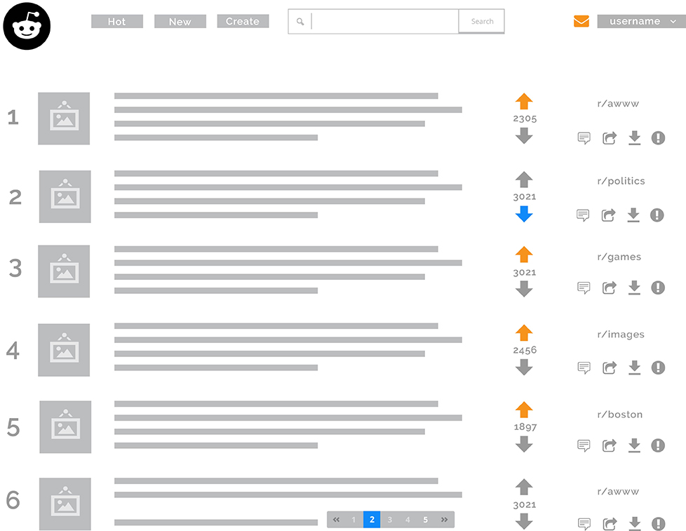

Reddit UX Redesign
UX - Wire Framing - Optimization

This is an unsolicited wireframe redesign of the desktop Reddit experience.
Hypothesis:
After speaking with several Reddit users, we concluded that for the average user, there are too many unused navigation and menu items on the screen.
Solution:
Eliminate unused navigation options while also not limiting the users ability to access their choice of content.